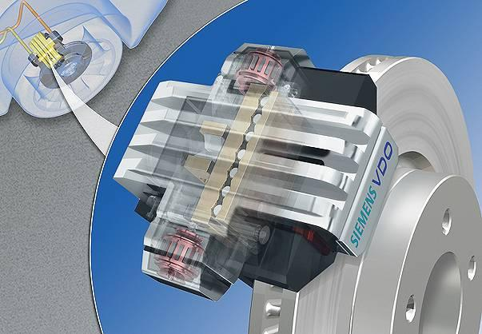
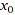
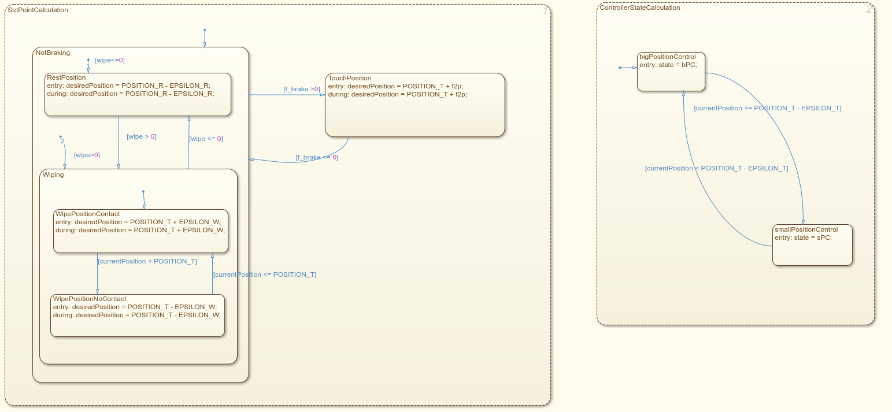

Introduction
Electro-Mechanical Breaking system
First project that I decided to run and analyze is Dr. Jens Oehlerking's project of Electro-Mechanical Braking System (EMB). Electro-Mechanical Braking System works similary as Hydraulic brake system, but instead of direct connection between the pedal and the calipers, there is a wire and number of sensors that measure driver's intention to break and if so, central unit sends a signal to all four wheel to break according to the situation. Instead of fluid hoses there are wires (at least 2 buses for each caliper). Advantage is that each caliper can break with different intensity according to the situation. But there is need for sensors of temperature, clamp force and actuator position.
Dr. Jens Oehlerking used in his study[3] hybrid verification tools (iSAT-ODE, Flow*, S-TALIRO tools) on this project which represents an experimental electro-mechanical braking system. Project consists of a plant model and a controller comprising both feedback and feedforward control. In study they show us model simplifications in order to obtain useful results from the verification tools. Particular focus here are verification results including parameter variations within the model to achieve a quantifiable form of robustness for the property in question.
EMB consists of electrical engine, which is used to push brake calipers against brake disc thus resulting in vehicle deceleration. When the contact with breaking disc has already been established, the electrical engine can be used to add additional braking force. There is a certain point  where caliper already touches the disc and from this point on the breaking force increases. Whole EMB system is operated by a controller which discrete behavior has been extracted into a Stateflow chart so it is easier to see the hybrid automaton structure of the model.
